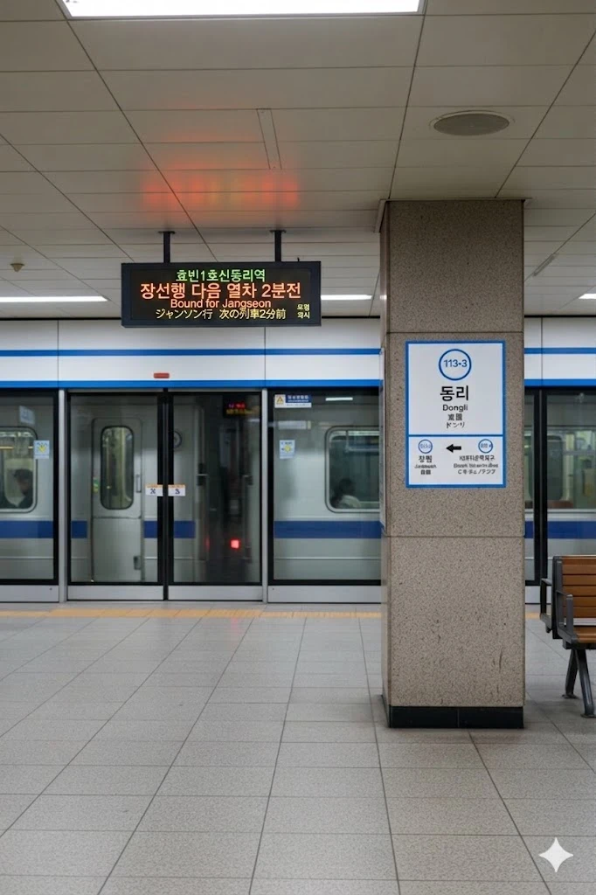

효빈 도시철도 1호선 113-3번. 추후 2034년에 효빈 도시철도 청엽선이 개통되면 환승역이 될 예정이다. 효빈광역시 청엽구 동리동 1-7 소재이다.
청엽구 동쪽 끝자락에 위치한 역으로, 역명은 옛 지명인 '동리(東里)'에서 유래했다. 역 주변은 동리동의 주거 중심지이자 교육의 중심지로, 동리초·중·여중·여고 등 다수의 학교가 밀집해 있다. 덕분에 등하교 시간대에는 학생 이용객으로 붐비는 편이다.
역사는 지하 2층 규모이며, 승강장은 2면 3선식의 구조를 갖추고 있다. 인근에는 동리아쿠아아파트와 동리동 행정복지센터 등이 위치해 있어 주민들의 생활 편의성이 높은 지역이다.
추후 청엽선이 개통되면 지하 2층에 있는 1호선 승강장에서 지상 2층의 고가 역사로 이어지는 거대한 환승 통로가 신설될 예정이다. 지하에서 햇빛을 보러 에스컬레이터를 끝없이 타야 하는 막장환승이 벌써부터 우려되고 있다. 출퇴근길 등산로 오픈 예정.
|
1
동리역 출구 정보
|
||
|---|---|---|
| 번호 | 주요 시설 및 방향 | 비고 |
| 1 | 동리아쿠아아파트 | |
| 2 | 서남초등학교, 동리동행정복지센터, 동리여자중학교, 동리여자고등학교, 동리초등학교, 동리고등학교, 동리중학교 | |
| 동리역 이용객 통계 | ||
|---|---|---|
| 연도 | 일평균 이용객 | 비고 |
| 2020년 | 10,216명 | |
| 2021년 | 10,826명 | |
| 2022년 | 14,678명 | |
| 2023년 | 15,020명 | |
| 2024년 | 15,322명 | |

| 장 원 ↑ | ||||
| 하 | ㅣ | ㅣ | ㅣ | 상 |
| ↓ 비마리유적지구 | ||||
| 상 | 1 효빈 도시철도 1호선 | 곽암해수욕장 · 창선 방면 |
| 하 | 1 효빈 도시철도 1호선 | 승남해수욕장 방면 |
| ㅣ | ㅣ | |||
|
|
||
|
|
효빈광역시 시내버스 노선들이 주로 정차한다.
| 구분 | 정류소명 | 노선 번호 |
|---|---|---|
| 순방향 | 동리역 | 4, 16, 19, 49, 151, 491, 612, 692 |
| 역방향 | 동리역(건너편) | 04-1, 61, 91, 94, 511, 941, 612, 692 |